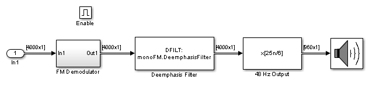

FM Monophonic Receiver with USRP® Hardware
This model shows how to use the Universal Software Radio Peripheral® (USRP®) device with Simulink® to build an FM mono receiver. It performs FM demodulation, deemphasis and rate conversion.
In order to run this model, you need a USRP® board with an appropriate receiver daughterboard that supports the FM band (e.g., TVRX or WBX). Please refer to Getting Started for details on configuring your host computer to work with the SDRu Receiver block.
Contents
Structure of the Example
The full FM receiver model is shown below:

The FM Receiver subsystem is also shown below:
The SDRu Receiver block takes in the baseband discrete-time complex samples from the USRP® hardware. The USRP® device has an ADC working at a 100 Msps sampling rate. The decimation factor is 500, resulting in an SDRu block output sampling rate of 200 kHz. The deemphasis filter in the receiver is set to 75 microseconds [ 1 ] and compensates for the preemphasis filter at the transmitter. The frequency response table is given below.

A resampler converts the sampling rate from 200 kHz to 48 kHz, a native sampling rate for the audio device. The resampling filter removes the 19 kHz stereo pilot tone.
The FM demodulator is implemented as a complex difference operation between consecutive complex samples, as shown below:

Set the Center Frequency to a local FM radio station, click the run button, and listen to the sound from the audio device. Change the Center Frequency to listen to a different station.
References
Copyright Notice
USRP® is a trademark of National Instruments Corp.